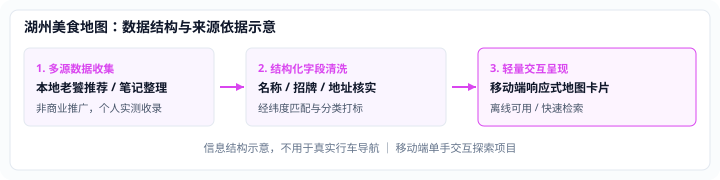

湖州美食地图
移动交互原型
把店铺信息做成有依据的地图
针对本地生活推荐碎片化问题，探索一套结构化数据清洗与单手地图呈现的原型：将推荐笔记转化为具备坐标、招牌与来源依据的清晰信息流。

Data & Presentation
信息结构设计与处理链路
店铺信息卡三要素
- 准确位置：经纬度与物理门牌对齐，杜绝定位漂移与虚假打标。
- 招牌菜品：直接提炼 1–2 道真实口碑单品，剔除商业推广修饰词。
- 来源出处：记录信息收录来源与整理时间，保持数据可查证。
移动端单手交互
针对外出找店场景设计下沉式卡片交互：地图占据上半屏保持视线通透，操作控件集中于拇指操作区，支持离线轻量缓存与即时检索。
注：本项目为个人前端原型探索，数据结构示意不用于真实车辆导航。